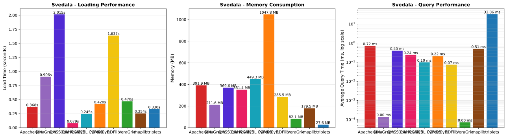
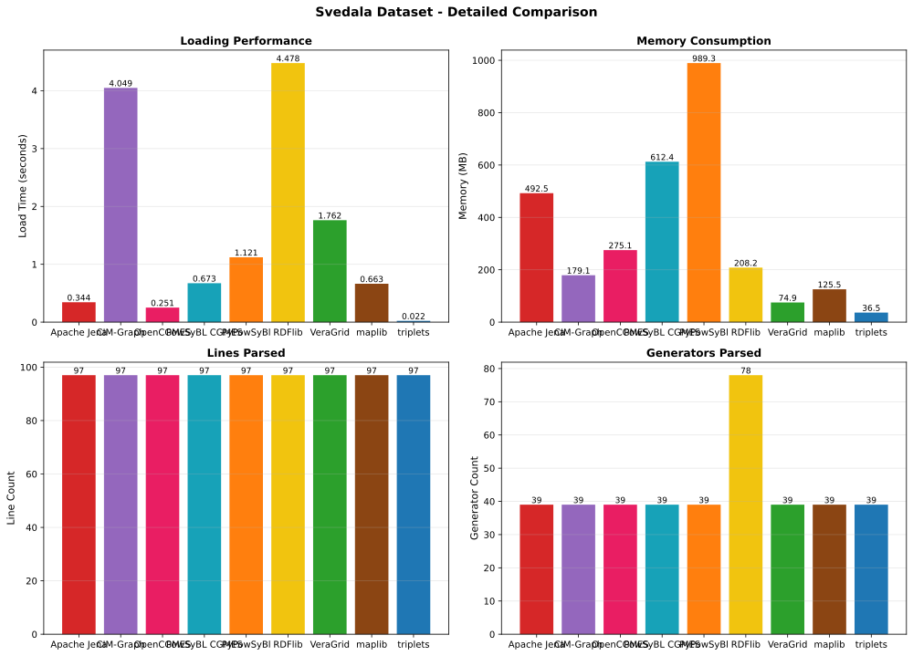
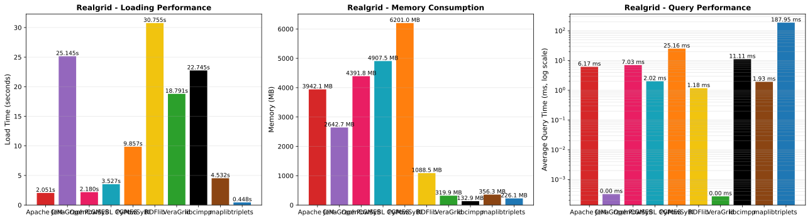
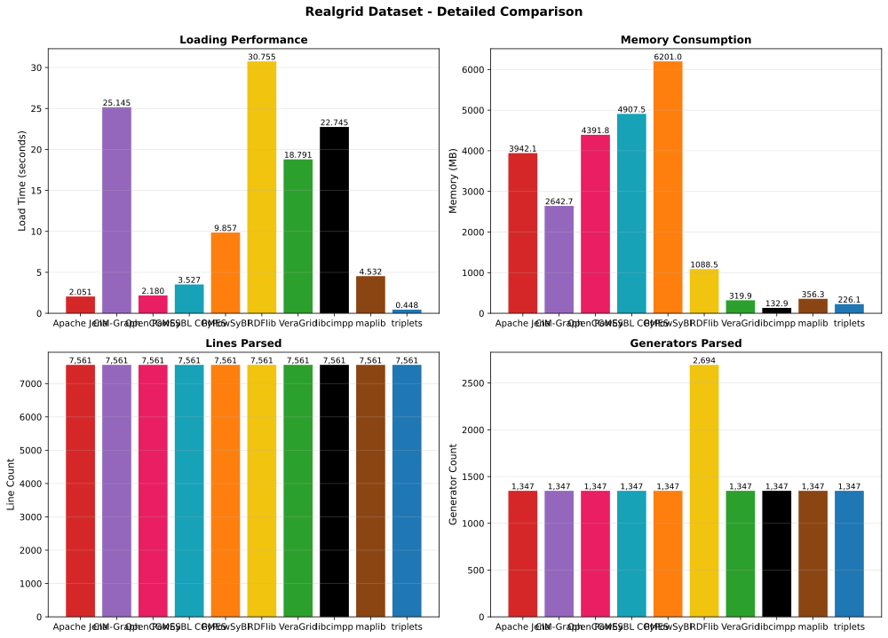
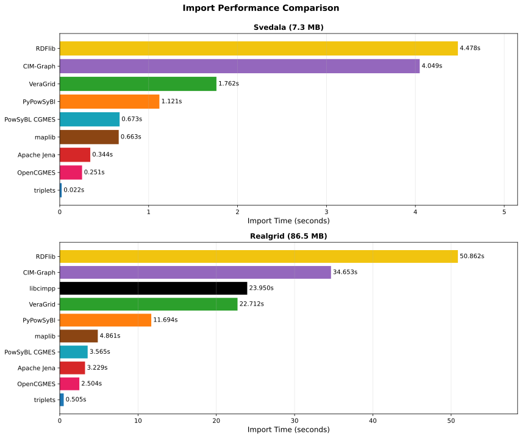
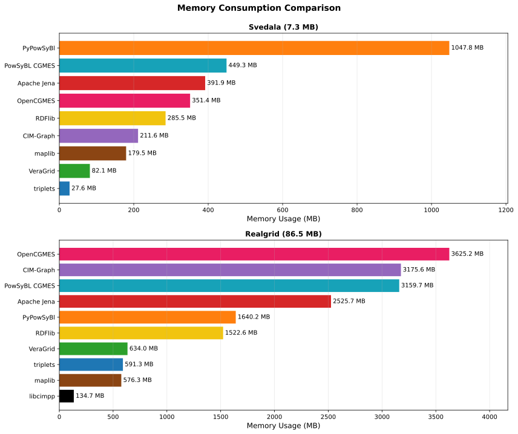
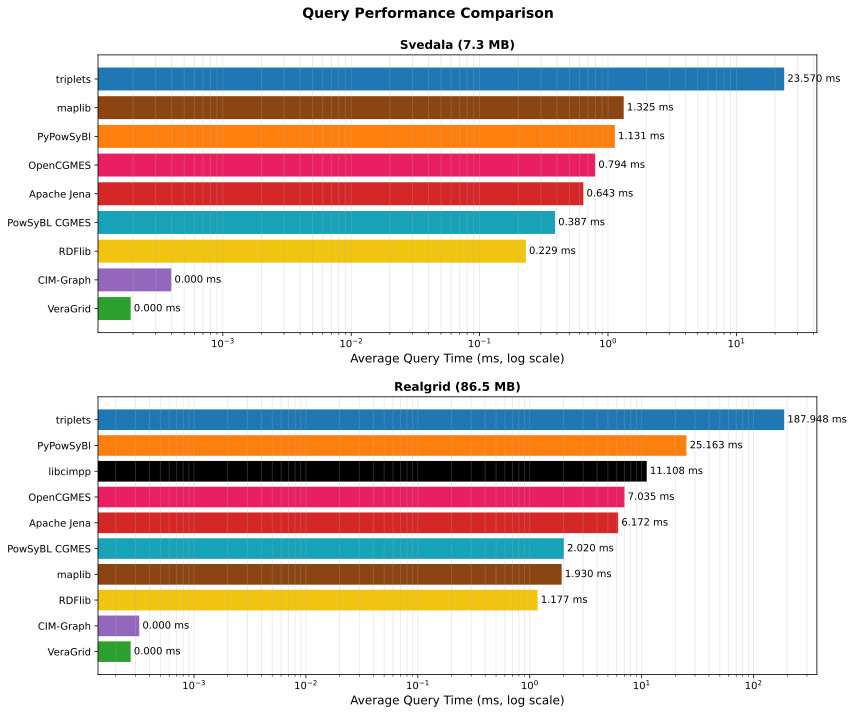
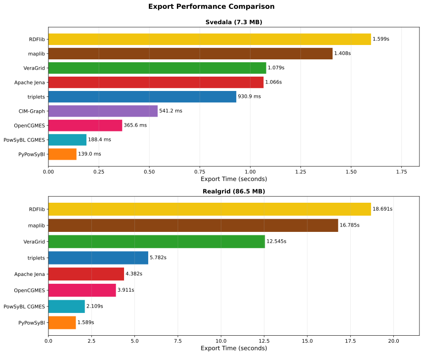
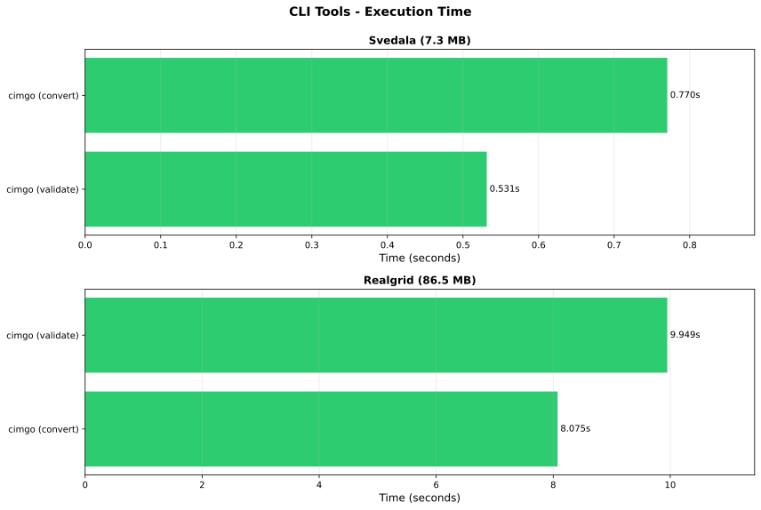
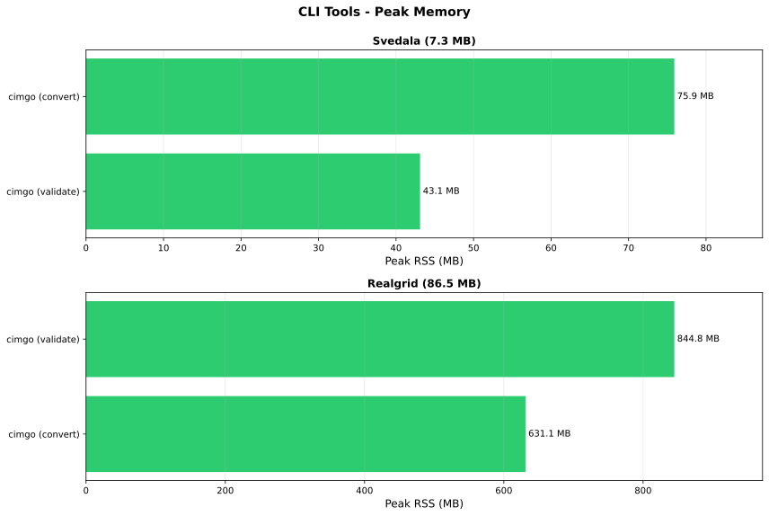

cim-bench
clijavaparserpythonqueryserializertriplestore
Svedala (7.3 MB)
| Tool | Tags | Version | Load time | Memory (MB) | Lines | Generators | Loads | Substations |
|---|---|---|---|---|---|---|---|---|
| OpenCGMES | parser | 1.0.0-SNAPSHOT | 79.2 ms | 351.4 | 97 | 39 | 73 | 56 |
| PowSyBL CGMES | parser | 7.1.1 | 245.4 ms | 449.3 | 97 | 39 | 73 | 57 |
| maplib | parser | 0.20.0 | 254.0 ms | 179.5 | 97 | 39 | 73 | 57 |
| triplets | parser serializer query python | 0.1.0 | 329.5 ms | 27.6 | 97 | 39 | 73 | 57 |
| Apache Jena | parser serializer query triplestore java | 6.0.0 | 368.1 ms | 391.9 | 97 | 39 | 73 | 56 |
| PyPowSyBl | parser | 1.14.0 | 419.7 ms | 1047.8 | 97 | 39 | 73 | 57 |
| VeraGrid | parser | 5.6.38 | 470.4 ms | 82.1 | 97 | 39 | 73 | 56 |
| CIM-Graph | parser | 0.4.3a12 | 905.6 ms | 211.6 | 97 | 39 | 73 | 56 |
| RDFlib | parser | 7.6.0 | 1.64 s | 285.5 | 97 | 78 | 146 | 57 |
Query performance
| Tool | generators | lines | loads | substations |
|---|---|---|---|---|
| Apache Jena | 474.1 μs | 1.2 ms | 927.0 μs | 261.5 μs |
| CIM-Graph | 0.1 μs | 0.1 μs | 0.2 μs | 0.1 μs |
| OpenCGMES | 172.2 μs | 438.4 μs | 295.7 μs | 70.5 μs |
| PowSyBL CGMES | 53.2 μs | 142.0 μs | 149.0 μs | 50.6 μs |
| PyPowSyBl | 266.9 μs | 284.8 μs | 189.8 μs | 121.9 μs |
| RDFlib | 51.3 μs | 57.3 μs | 140.9 μs | 49.3 μs |
| VeraGrid | 0.1 μs | 0.0 μs | 0.1 μs | 0.1 μs |
| maplib | 341.4 μs | 366.4 μs | 948.0 μs | 380.7 μs |
| triplets | 29.3 ms | 30.1 ms | 44.3 ms | 28.5 ms |


Realgrid (86.5 MB)
| Tool | Tags | Version | Load time | Memory (MB) | Lines | Generators | Loads | Substations |
|---|---|---|---|---|---|---|---|---|
| OpenCGMES | parser | 1.0.0-SNAPSHOT | 1.04 s | 3625.2 | 7,561 | 1,347 | 6,687 | 4,875 |
| triplets | parser | 0.0.17 | 1.36 s | 591.3 | 7,561 | 1,347 | 6,687 | 4,875 |
| Apache Jena | parser | 6.0.0 | 1.59 s | 2525.7 | 7,561 | 1,347 | 6,687 | 4,875 |
| PowSyBL CGMES | parser | 7.1.1 | 1.75 s | 3159.7 | 7,561 | 1,347 | 6,687 | 4,875 |
| maplib | parser | 0.20.0 | 2.18 s | 576.3 | 7,561 | 1,347 | 6,687 | 4,875 |
| PyPowSyBl | parser | 1.14.0 | 4.32 s | 1640.2 | 7,561 | 1,347 | 6,687 | 4,791 |
| VeraGrid | parser | 5.6.38 | 6.90 s | 634.0 | 7,561 | 1,347 | 6,687 | 4,875 |
| RDFlib | parser | 7.6.0 | 19.42 s | 1522.6 | 7,561 | 2,694 | 13,374 | 4,875 |
| libcimpp | parser | 2.2.0 | 20.11 s | 134.7 | 7,561 | 1,347 | 6,687 | 4,875 |
| CIM-Graph | parser | 0.4.3a12 | 25.86 s | 3175.6 | 7,561 | 1,347 | 6,687 | 4,875 |
Query performance
| Tool | generators | lines | loads | substations |
|---|---|---|---|---|
| Apache Jena | 565.1 μs | 3.0 ms | 2.4 ms | 894.9 μs |
| CIM-Graph | 0.1 μs | 0.1 μs | 0.2 μs | 0.1 μs |
| OpenCGMES | 236.1 μs | 1.9 ms | 947.6 μs | 382.5 μs |
| PowSyBL CGMES | 248.5 μs | 1.2 ms | 1.0 ms | 335.3 μs |
| PyPowSyBl | 2.7 ms | 36.4 ms | 21.3 ms | 4.5 ms |
| RDFlib | 442.2 μs | 1.2 ms | 2.3 ms | 770.4 μs |
| VeraGrid | 0.1 μs | 0.1 μs | 0.1 μs | 0.1 μs |
| libcimpp | 6.8 ms | 6.8 ms | 16.3 ms | 7.2 ms |
| maplib | 452.2 μs | 609.0 μs | 1.2 ms | 517.6 μs |
| triplets | 268.8 ms | 306.5 ms | 625.7 ms | 254.6 ms |


Cross-dataset comparisons




Export performance
Serialization of loaded data back to RDF/XML. Ratio is export time over import time.
| Tool | Dataset | Export time | Export/Import ratio |
|---|---|---|---|
| Apache Jena | realgrid | 4.38 s | 2.75x |
| OpenCGMES | realgrid | 3.91 s | 3.77x |
| PowSyBL CGMES | realgrid | 2.11 s | 1.20x |
| PyPowSyBl | realgrid | 1.59 s | 0.37x |
| RDFlib | realgrid | 18.69 s | 0.96x |
| VeraGrid | realgrid | 12.55 s | 1.82x |
| maplib | realgrid | 16.79 s | 7.70x |
| triplets | realgrid | 5.78 s | 4.26x |
| Apache Jena | svedala | 1.07 s | 2.90x |
| CIM-Graph | svedala | 541.2 ms | 0.60x |
| OpenCGMES | svedala | 365.6 ms | 4.62x |
| PowSyBL CGMES | svedala | 188.4 ms | 0.77x |
| PyPowSyBl | svedala | 139.0 ms | 0.33x |
| RDFlib | svedala | 1.60 s | 0.98x |
| VeraGrid | svedala | 1.08 s | 2.29x |
| maplib | svedala | 1.41 s | 5.54x |
| triplets | svedala | 930.9 ms | 2.82x |
CLI tools
Benchmarked as subprocesses (full process lifecycle per run) - not comparable with the in-process library numbers above.
| Tool | Tags | Version | Dataset | Operation | Time | Peak RSS (MB) |
|---|---|---|---|---|---|---|
| cimgo | cli | ? | svedala | convert | 770.3 ms | 75.9 |
| cimgo | cli | ? | svedala | validate | 531.4 ms | 43.1 |
| cimgo | cli | ? | realgrid | convert | 8.07 s | 631.1 |
| cimgo | cli | ? | realgrid | validate | 9.95 s | 844.8 |

